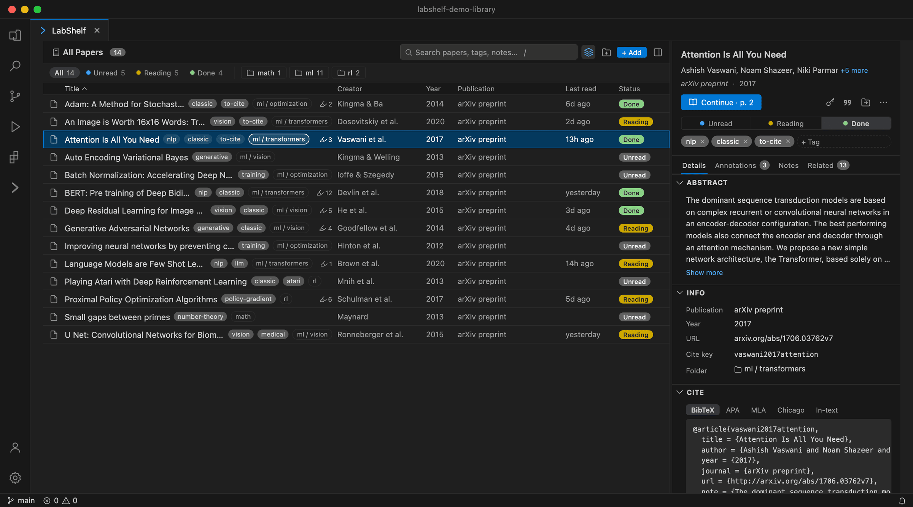
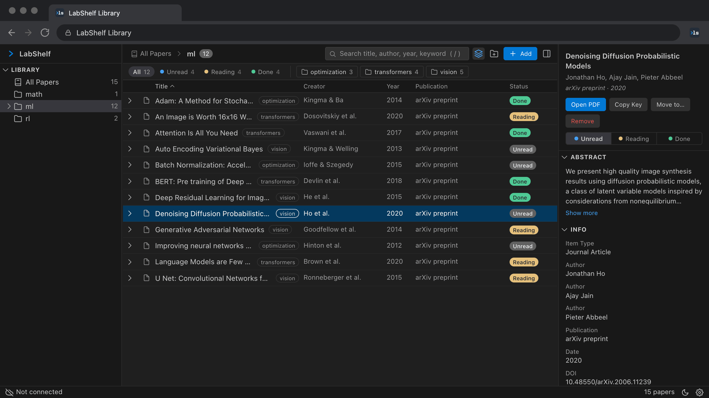
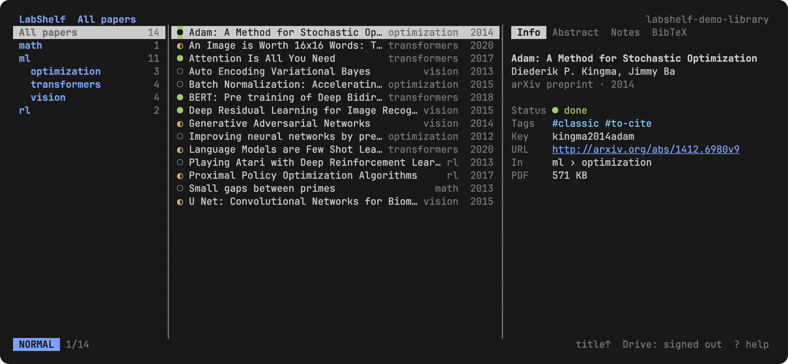

Save papers from the page you find them on, read them with every reference one hover away, and keep the library as a folder you own. In VS Code, your browser and your terminal.
The dots keep your place the way the library keeps your papers: unread, reading, done.
1
LabShelf GuideAbout
01Why LabShelf
Papers live in one tool, writing in another and code in a third. Every switch costs attention, and the reference manager is the tool most people would rather not open.
LabShelf brings the library to where you already work: three apps of one product, with the same folder, the same look and the same keys in VS Code, in the browser and in the terminal. There is no account and no LabShelf server. Your papers stay on your disk, and the apps meet, when you want them to, in your own Google Drive. The idea has a name, local-first software [1], and a simple test: delete the app and keep everything.



Figure 1.
What LabShelf asks of you
Price
Free, with no plans and no limits.
Account
None. Sync uses your own Google account and your own OAuth client.
A library is an ordinary folder. Each paper is a folder named after its cite key, holding the PDF, a readable metadata file and a BibTeX entry generated from it.
Every app reads and writes exactly this layout, and nothing in it needs LabShelf to be opened, searched, backed up or moved. The folder is the source of truth; every index is a cache rebuilt from it.
# a library on diskLabShelf Library/papers/ml/transformers/vaswani2017attention/
paper.pdf
metadata.yaml
bib.bib
.research/papers/vaswani2017attention/
data.json # highlights
index.sqlite # a cache
# metadata.yamltitle: Attention Is All You Need
authors:
- Ashish Vaswani
- Noam Shazeer
year: 2017
journal: arXiv preprint
doi: 10.48550/arXiv.1706.03762
status: done
tags: [nlp, classic, to-cite]
note: Read 3.2 again before the talk.
metadata.yaml
The record: title, authors, venue, abstract, status, tags and your note. An app writes only the keys it owns in an action, so a metadata refresh never touches your status, tags or note.
bib.bib
A BibTeX entry regenerated whenever the record changes, ready for \cite. labshelf bib and the Generate BibTeX command collect a folder's entries into one file.
data.json
Reader state, apart from the paper: highlights, page theme and last position. Keyed by id, not by path, so moving a paper never loses its annotations.
Delete LabShelf tomorrow and you keep a folder of PDFs, YAML and BibTeX that any tool can read.
3
LabShelf GuideUsing LabShelf
03Get started
LabShelf is built from source for now. You need Node.js 22.13 or later and pnpm 9 or later; one checkout builds all three apps.
Pin the LabShelf button. It saves the paper on the current tab.
Terminal
Link dist/labshelf.mjs onto your PATH as labshelf.
labshelf init <path> creates or adopts a library. Use the folder VS Code uses.
labshelf doctor checks the library, the config, Drive and the image protocol.
Google Drive, optional
Sync goes through your own Google Cloud project. Create a Desktop OAuth client for VS Code and the terminal and a Web client for the browser, copy their ids into credentials/ and rebuild. The setup guide walks through the console, the redirect URIs and the test-user warning.
The local apps find the same library through one shared config file, ~/.config/labshelf/config.json. VS Code writes it when you configure a library and the terminal reads it. The browser keeps its own copy of the library and meets the others on Drive.
Add one paper and open it. If the reader looks like this page, everything is wired.
4
LabShelf GuideUsing LabShelf
04Save papers from where you find them
On arXiv, a journal page or Google Scholar, click the LabShelf button. The paper, its PDF and its BibTeX land in the folder you choose (Figure 2).
Figure 2. From an arXiv page to the library. The extension reads the page, finds the PDF, lets you pick a folder and add tags or a note, and saves.
In the browser
The popup shows what it found on the tab and whether a PDF is reachable: pick a folder, add tags or a note, save. On Google Scholar, every result gets its own Save button.
In VS Code
LabShelf: Add Paper takes a PDF, a folder of PDFs, a URL, a DOI or an arXiv id. Scanned PDFs get an OCR text layer, so old scans become searchable.
In the terminal
labshelf add 1706.03762 --to ml imports from an arXiv id, a DOI, a URL, a PDF or a folder. In the explorer, a does the same in the current folder.
Metadata finds itself
LabShelf reads the DOI or arXiv id out of the PDF and completes the record from Crossref, arXiv, PubMed and Unpaywall; with no id, it looks the title up. Resolve Missing Metadata retries every incomplete paper. The cite key follows the familiar vaswani2017attention pattern and never changes once assigned, so citations in your drafts keep resolving.
5
LabShelf GuideUsing LabShelf
05Organize and find
Folders are for navigation and papers are the content. A list shows papers only; the folder you are in is a path header, never a row.
Figure 3. Six papers, filtered as you type by the parser every app runs: the list, the browser, the explorer's f filter and labshelf search. Matching is case- and accent-insensitive.
Status
Every paper is Unread, Reading or Done. Change it in the list, the detail pane, the explorer or with labshelf status.
Tags and notes
Tags are free labels shown as chips. The note is yours; it lives in metadata.yaml next to the record and is searched like everything else.
Citations
The detail pane prints BibTeX, APA, MLA, Chicago and in-text citations, and copies the cite key with one click.
One query language, every app
attention transformer
every word must match, in any field
"exact phrase"-survey
a phrase; an excluded word
#nlptag:nlp
has the tag
status:readingis:unread
reading status
year:2017year:2015..2020year:>2018
a year, a range, a bound
author:vaswanivenue:neuripskw:attention
one field: author, venue, kw, note, key, abstract
has:pdfno:pdfhas:notehas:doi
presence of a PDF, note, DOI, tags or abstract
6
LabShelf GuideUsing LabShelf
06Read with everything one hover away
The reader is the same in VS Code and in the browser, and it is the one framing this page. The toolbar gets out of the way while you read, and the droplet switches light, dark, sepia, high contrast or custom page colours.
1Sidebar. Thumbnails, the outline and annotations, with F4.
2Toolbar. Back and forward through links, find, page theme, shortcuts.
3Hover preview. A citation, figure, table or section, shown where you are.
4Status pill. Go to a page; zoom, fit width or fit page.
Hover previews
Rest the pointer on a citation, a figure reference or a section link: the destination appears in a popup with Copy and Jump, and your place is kept. Try it on [1] or on Figure 1.
Highlights and citations
Select text and pick one of five colours. Highlights live in the paper's sidecar, follow it to every app and are listed in the Annotations tab, which exports them as Markdown. CtrlShiftC copies the selection with its citation in Pandoc, LaTeX, author-year or cite-key style.
Keyboard
Arrows and Space scroll, Home and End jump, CtrlF finds, Ctrl=−0 zoom and CtrlAltG goes to a page. With labshelf.reader.vimKeys, jk, du, ggG, /nN and HL join them. Press ? here for the full list.
7
LabShelf GuideUsing LabShelf
07Sync through your own Drive
Sync is optional and goes through a Google Drive folder that belongs to you. LabShelf has no server: each app talks to Drive directly, with the files it created, and the apps meet there.
Your diskVS Code and the terminal share the library folder
Your Google Driveonly the files LabShelf created, through your OAuth client
Your browserthe extension keeps its own copy of the library
Connecting
VS Code
Sync: Connect to Google Drive from the command palette, then Sync: Sync Now or the timer, every 15 minutes by default.
Browser
The cloud button in the popup signs in. Saved papers sync shortly after, in the background.
Terminal
labshelf auth login, then labshelf sync, or S in the explorer.
What sync promises
It never deletes a file because of something it cannot explain. When unsure, it keeps both copies.
Papers, records, BibTeX and sidecars sync. The SQLite index, logs and sync state stay local and are rebuilt.
Local apps take turns. While the terminal syncs, VS Code reports it and waits, and the other way round.
Drive sees only files LabShelf created, through the drive.file and drive.appdata scopes.
A paper added in the browser, marked Done in the terminal and highlighted in VS Code is one paper with one record.
8
LabShelf GuideUsing LabShelf
08The terminal: an explorer and a CLI
labshelf opens a keyboard explorer with three panes, folders, papers and preview, in the manner of yazi [3]. Subcommands do the same work for scripts and pipelines.
Figure 5. The explorer. jk move, l opens a folder and then the PDF, Tab cycles the preview through Info, Abstract, Notes and BibTeX. Thumbnails render in kitty, Ghostty, iTerm2 and WezTerm.
Keys
Explorer
hjkl
move around the panes
ggGHL
top, bottom, back, forward
f/s
filter, find, search the library
zZ
jump to a folder, to a paper
mumrmd
mark Unread, Reading, Done
tea
tags, note in $EDITOR, add
xpM
cut, paste here, move to…
ycybym
copy \cite, BibTeX, highlights
S:?
sync, command line, help
> labshelf ls ml/transformers -r
> labshelf search year:2015..2020 #nlp
> labshelf show devlin2018bert
> labshelf add 1706.03762 --to ml
> labshelf bib -c ml -o refs.bib
> labshelf status devlin2018bert done
> labshelf tag devlin2018bert +classic
> labshelf mv devlin2018bert ml/nlp
> labshelf sync
> labshelf ls --json | jq '.[].title'
Every command takes --json for machine-readable output and -L <path> to point at another library. labshelf where prints the library, config and log paths.
9
LabShelf GuideSupport
09Support LabShelf
Free, with no plans, no limits and no telemetry, built in the open by one person. If LabShelf saves you time, here is how to give some back.
Sponsor the work
A monthly or one-time contribution pays for the time behind releases and for the store and verification fees.
TypeScript in four packages, with the rules for every change written down. Importers, terminal themes and translations of this guide are good first contributions.
A LaTeX and Typst writing environment that knows your library is in development: citation completion from the whole library, builds with no setup through Tectonic [4] or your own TeX Live, and a live Typst preview [5] in this reader.
Cite LabShelf
@software{nasser2026labshelf,
author = {Nasser, Luca Marinho},
title = {LabShelf: a local-first paper manager},
year = {2026},
url = {https://github.com/lucaanasser/labshelf}
}
References
[1]M. Kleppmann, A. Wiggins, P. van Hardenberg and M. McGranaghan. Local-first software: you own your data, in spite of the cloud. Onward! 2019. inkandswitch.com/local-first
[2]A. Vaswani, N. Shazeer, N. Parmar, J. Uszkoreit, L. Jones, A. N. Gomez, Ł. Kaiser and I. Polosukhin. Attention is all you need. NeurIPS 2017. arXiv:1706.03762